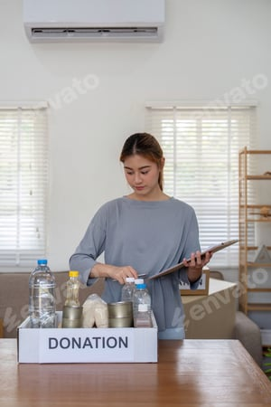

Every hour you give becomes a meal for a family, a book for a child, a check-up for a mother. Become a volunteer today — and turn your compassion into lasting impact.
Volunteering isn't just about giving — it's about growing, connecting, and discovering what you're truly capable of.
Your hours become meals, books, medicines, and hope for real people in your community.
Meet like-minded people who share your values. Many of our volunteers become lifelong friends.
Free access to our training programs — leadership, communication, first aid, and program management.
Certificates, references, and our annual "Volunteer of the Year" award for outstanding contributors.
Watch how a single volunteer's weekend transforms lives — and why thousands keep coming back.
Whatever your skill or schedule, there's a place for you. Choose the role that fits your strengths and time.
Help children from underserved communities with reading, math, and life skills. No degree needed — just patience and heart.
Apply for this rolePack and distribute meal kits to families in need. Physically active, deeply rewarding, and always team-led.
Apply for this roleAssist doctors and nurses at our rural health camps. Ideal for medical students and healthcare professionals.
Apply for this roleHelp with social media, graphic design, content writing, or web development — from anywhere in the world.
Apply for this roleTeach tailoring, cooking, computer basics, or financial literacy to women building their independence.
Apply for this role
Help transport supplies, aid kits, and volunteers between our warehouse and field locations.
Apply for this roleFrom application to your first shift in under a week. Here's exactly how it works.
Fill the short application form below. Takes 2 minutes.
15-minute chat with our coordinator to match you with the right role.
Attend our free 2-hour orientation — online or in person.
Pick your shifts and start making a real difference.
What 186 volunteers achieved together — one hour, one meal, one life at a time.
Fill the form below and our coordinator will reach out within 48 hours.
No experience required. Just bring your heart, and we'll take care of the rest.
Fill in your details and we'll match you with the perfect volunteer role.